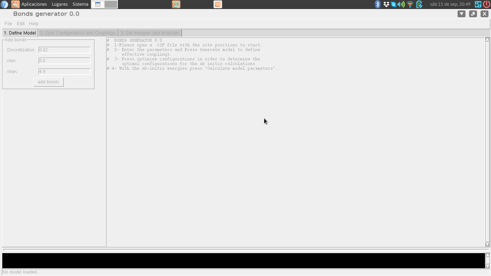
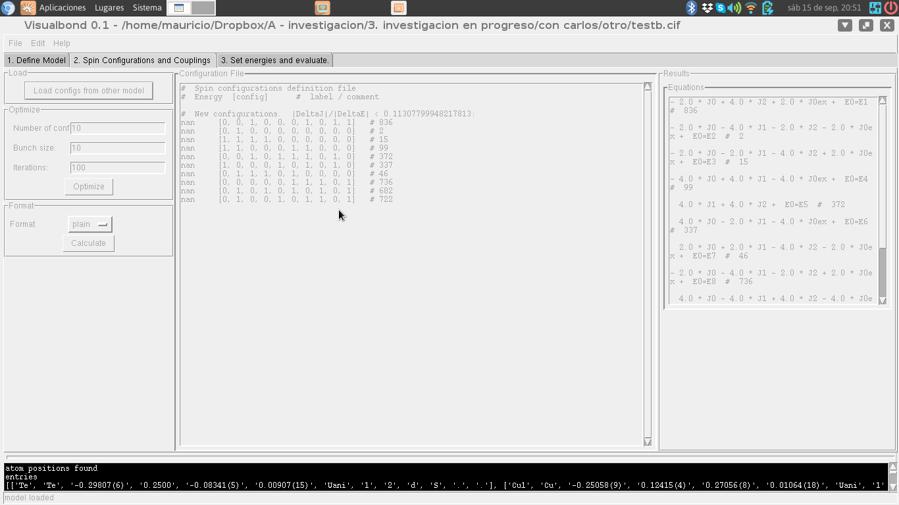
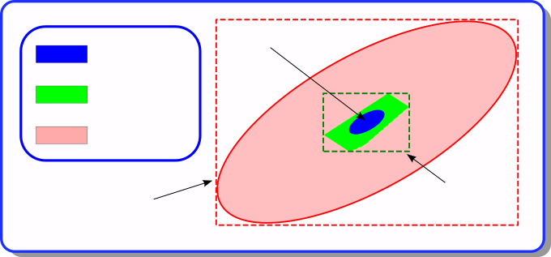

This package is a set of tools to determine, by means of ab initio simulations, the value of the coupling constants in a Heisenberg-like effective magnetic model for a given magnetic system.
spectrojotometer requires Python 3.11 or later. To install it from the repository:
pip install git+https://github.com/QILPCM-IFLP-CONICET/spectrojotometeror, from a copy of the repository, pip install .. For
development, an editable installation with the test dependencies:
pip install -e ".[test]"
pytestThe tests of the graphical interface need a display; they are skipped
without one (on a headless machine, run them with
xvfb-run pytest).
magnetic_model_from_file /
magnetic_model_from_cif accept an optional
primitive_cell parameter (default False). See
the main README for details; in short, primitive_cell=True
keeps only the atoms declared in the CIF’s asymmetric unit (e.g. 4
instead of 16 for ZnCr2O4) and switches the model’s Bravais vectors to a
primitive basis, instead of expanding atoms to fill the conventional
cell.
Visual Bond is a graphic interfase for the tools in the spectrojotometer package.


The DFT energies are only known within a tolerance δE (the Energy tolerance field). The couplings compatible with the data are those that reproduce every computed energy within that tolerance. They form a convex polytope in the space of parameters, the compatibility polytope (green in the figure). The value reported for each coupling is the center of the smallest box that contains the polytope, and its error bar is the half width of the box (dashed green: uncertainty in parameters).

The polytope always lies between two ellipses centered at the least-squares solution: a lower bound (blue), contained in it, and an upper bound (red), which contains it. The Error bound method selector chooses how the box is obtained:
The results also list region constraints: inequalities on
combinations of couplings, |v·J − c| < δ, which are
often much tighter than the individual error bars, because the polytope
is usually elongated.
If no set of couplings reproduces all the energies within the tolerance (the polytope is empty), the couplings are marked as incompatible: either the tolerance is too small, or the model lacks some relevant coupling. A coupling that the configurations with known energies do not fix is shown as undetermined: add configurations that involve it.
Installing the package provides these commands:
Each command accepts –help, and -v / -vv to show progress and
diagnostic messages. They can also be run as python -m
spectrojotometer.cli.
*) bond_generator:
usage: bond_generator [-h] [-d [value]] [–rmin [value]] [–rmax [value]] [-v] modelfile outfile
From an standard cif file, produces a new cif file containing information about the bonds that defines a Heisenberg magnetic effective model. If the input file has already information about bonds, the output file contains both the bonds in the input as well as the new generated bonds.
positional arguments: modelfile load atomic positions from a model file. It can be specified by a cif or a Wien2k struct file outfile Name of the outputfile.
options: -h, –help show this help message and exit -d [value], –discretization [value] the tolerance in considering two distances as the same. –rmin [value] the minimal distance between atoms of the bond –rmax [value] the maximal distance between atoms of the bond -v, –verbose Show progress messages (-v) or detailed diagnostics (-vv).
As an example, by run
bond_generator –rmin 0 –rmax 3.1 –discretization .02 example1.cif example1-nnn.cif
for the example1.cif file in the examples folder creates example1-nnn.cif, with two couplings, J0 (distance 2.94) and J1 (distance 3.08). The model can be modified by hand with a text editor.
Mind the size of the cell: with n magnetic sites there are 2^(n-1) distinct configurations, so at most 2^(n-1) - 1 couplings can be determined. example1.cif has 3 sites: with –rmax 4.9 the model would have four couplings, which no choice of configurations could determine (the programs below report an infinite error bound). Larger models need a larger cell.
*) optimize-configurations
usage: optimize-configurations [-h] [--known [known configuration file]]
[--start [start file]] [-n numconfs]
[-u updatesize] [--it iterations] [-v]
modelfile outfile
Generate spin configurations that determine the coupling constants of a model
with the smallest errors
positional arguments:
modelfile load atomic positions from a cif file
outfile Name of the outputfile. If "-" is provided, the output
is printed to the standard output.
options:
-h, --help show this help message and exit
--known [known configuration file]
file with the set of configurations that we want to
increase
--start [start file] A file containing an initial guess for the target
configurations.
-n numconfs number of new configurations to be generated. If not
given, the smallest set that determines every
coupling, enlarged while each extra configuration
reduces the largest error of a coupling by at least 5%
-u updatesize number of random configurations to be generate on each
step
--it iterations number of iterations
-v, --verbose Show progress messages (-v) or detailed diagnostics
(-vv).As an example, by run
optimize-configurations example1-nnn.cif optconfs1.out
on the example1-nnn.cif generated by bond_generator, creates optconfs1.out, with the magnetic configurations whose energies determine the couplings with the smallest errors (here, three configurations, and a largest error per unit error in the energies of 1.0). The program also writes a recovery file, example1-nnn-resume.tmp, which can be used to continue the search:
optimize-configurations –start example1-nnn-resume.tmp example1-nnn.cif optconfs1.out
To know which configurations would be most useful to simulate once a set of them has already been simulated, run
optimize-configurations –known optconfs1.out example1-nnn.cif optconfs2.out
In this case, the program looks for the configurations that best complement those in optconfs1.out. Here it proposes none: the only configuration left, [0, 0, 0], would not reduce the errors. Unless the number of new configurations is given with -n, a configuration is proposed only if it reduces the largest error of a coupling by at least 5%.
*) evaluate_cc
From a set of energies and magnetic configurations, estimates the
coupling constants of a model, with error bars given by a box around
the compatibility region (see "Estimating parameter uncertainties"
above).
usage: evaluate_cc [-h] [-t [value]] [-m {exact,montecarlo,ellipse}]
[--mcsteps [value]] [-e] [-x] [-v]
modelfile [input file]
From a set of energies and magnetic configurations, estimates the coupling
constants of a model.
positional arguments:
modelfile load atomic positions from a model file.
[input file] file containing evaluated energies and magnetic
configurations.
options:
-h, --help show this help message and exit
-t [value], --tolerance [value]
Provides the estimated error for the energies.
-m {exact,montecarlo,ellipse}, --method {exact,montecarlo,ellipse}
How to bound the compatibility region: exact box by
linear programming (default), Monte Carlo sampling
(inner estimate) or the bounding box of an ellipsoid
containing it (outer estimate).
--mcsteps [value] Number of Monte Carlo samples (only with --method
montecarlo).
-e, --equations Prints the resulting equations.
-x, --showchi Prints the list of errors in the predicted
configuration energy.
-v, --verbose Show progress messages (-v) or detailed diagnostics
(-vv).
In the input file, each line consists of the energy of a magnetic
configuration, followed by the configuration as a list [0,1,0,...].
Anything after a # is considered a comment. Configurations whose
energy is nan are ignored. For example:
# Energy Configuration Label
143121.12 [0,0,0,0,0,0,0] # Ferro up
143121.02 [1,1,0,0,1,1,1] # Disorder1
143121.24 [1,0,1,1,1,1,0] # Disorder2
143121.12 [1,1,1,1,1,1,1] # Ferro down
Running, with the files in the examples folder,
evaluate_cc examples/example1.cif examples/example1.spin
prints (after some diagnostic messages)
# Results (method: exact):
===========
<E> = 49022.002225000004 (average energy of the configurations)
J0 = ( -1.0 +/- 2.2222222168326238 ) * 0.00022499999977299012
max relative error: 0.03333334461785853 in configuration 1
Each coupling is shown as (value +/- error) * scale, where the scale
is the largest coupling in absolute value. <E> is the average energy
of the configurations. Here the three
configurations do not determine J0 beyond the tolerance (the error
bar is larger than the value): more configurations, or a smaller
tolerance, are needed.
With -x, the program also prints, for each configuration, the
difference between the input energy and the one predicted by the
model, relative to the tolerance. Once enough configurations have
been evaluated, this checks the validity of the effective model:
differences larger than 1 mean that the model cannot reproduce the
input spectrum. If no set of couplings reproduces all the energies
within the tolerance, the couplings are marked as (incompatible).*) map_configs
usage: map_configs [-h] [--tol tolerance] [--fill {0,1}] [-v]
modelfile1 modelfile2 conffile outfile
Translate the spin configurations of a source model into configurations of a
target model: each site of the target takes the spin of the site of the source
at the same position (up to a translation of the source lattice). The energies
are scaled by the ratio between the number of sites of the target and of the
source cells. Configurations that are not periodic with the lattice of the
target (when it is smaller than the source cell) cannot be represented: they
are written as comments.
positional arguments:
modelfile1 model file of the source model
modelfile2 model file of the target model
conffile configurations of the source model
outfile output file; "-" prints to the standard output
options:
-h, --help show this help message and exit
--tol tolerance largest distance between matching sites (default 0.1)
--fill {0,1} spin for the sites of the target without counterpart in the
source (by default, such sites are an error)
-v, --verbose Show progress messages (-v) or detailed diagnostics (-vv).
For example, mapping the configurations of example1 onto the same
model (each site onto itself):
map_configs examples/example1.cif examples/example1.cif examples/example1.spin -
# site map (target <- source): [0, 1, 2]
49022.0027 [0, 0, 0] # 0
49022.0022 [1, 0, 0] # 1
49022.0018 [0, 1, 0] # 2
The output is a configuration file: it can be used as input of the
other commands. A site of the target model without counterpart in the
source model is an error, unless --fill gives the spin to use. When the
cell of the target is smaller (e.g. the source is a supercell of it),
only the configurations periodic with the target lattice are mapped.*) print_equations
usage: print_equations [-h] [--format format] [-v] modelfile conffile
From an standard cif or wien2k struct file, and a list of configurations,
prints the list of equations for the coupling constants
positional arguments:
modelfile load atomic positions from a model file for the source
model
conffile configs in the src model
options:
-h, --help show this help message and exit
--format format output format
-v, --verbose Show progress messages (-v) or detailed diagnostics (-vv).
For example,
print_equations examples/example1.cif examples/example1.spin
# Equations:
- 2.0 * J0 + E_0=E_1 # 0
E_0=E_2 # 1
2.0 * J0 + E_0=E_3 # 2